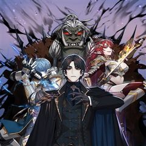
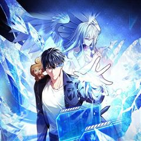
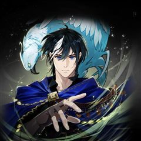
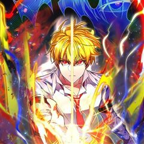
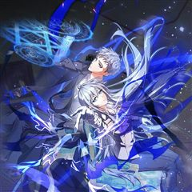

천재 궁수의 스트리밍 같은 웹툰 추천

천재 궁수의 스트리밍 · 캐롯스튜디오 / 부질 / 멍멍킴
천재 궁수의 스트리밍 재밌게 봤다면 이 웹툰들도 좋아할 거예요. 같은 장르이면서 서스펜스, 학원물 같은 요소가 겹치는 작품을, 겹치는 요소가 많은 순서로 20개 골랐어요.
2026-10-03 기준 · 네이버웹툰·카카오웹툰·레진코믹스 · 성인 작품 제외
내 취향으로 직접 골라 추천받기 →-
1
 카카오웹툰
카카오웹툰해골병사는 던전을 지키지 못했다
나는 ‘해골병사’. 주인인 서큐버스님을 용사로부터 지키지 못하고 그저 하찮게 부서져 버린 일개 몬스터. 그렇게 죽음을 맞이하는 줄 알았다. 그러나 정신을 차려보니, 20년 전 사령술사에 의해 눈을 뜬 그 날로 돌아왔다. ‘띠링!’ 남들에게는 보이지…
서스펜스학원물판타지스릴러·공포카카오웹툰에서 보기 → -
2
 카카오웹툰
카카오웹툰튜토리얼이 너무 어렵다
우연히 튜토리얼의 세계로 들어가게 된 전직 프로게이머 이호재. 튜토리얼에서 살아남기 위해서 처절한 노력을 하는 주인공은 주어진 미션을 클리어 해나가면서 튜토리얼의 비밀을 알게되는데... 튜토리얼을 넘어서 적극적으로 자신의 삶과 세계를 변화시켜 나가는…
서스펜스학원물판타지스릴러·공포카카오웹툰에서 보기 → -
3카카오웹툰
문 뒤에 지옥이 있다
'문'을 열 때마다 문 뒤의 공간이 무작위로 뒤섞이는 세상. 그곳에서 살아남은 학생들. 가족들의 곁으로 돌아가기 위해, 집으로 돌아가기 위해선 저 '문'을 열어야만 한다.
서스펜스학원물판타지스릴러·공포카카오웹툰에서 보기 → -
4
 카카오웹툰
카카오웹툰로그인 무림
세상의 경계인 게이트에서 몬스터 사냥을 하는 헌터들이 잘 먹고 잘 사는 시대. 주인공 진태경은 최하위 헌터라 벌이가 시원찮다. 어느 날, 낡은 VR 게임기를 줍게 되고 접속하니 무림의 세계가 펼쳐진다. 우여곡절 끝에 현실로 돌아온 태경은 무림에서 얻…
서스펜스판타지무협카카오웹툰에서 보기 → · 로그인 무림 같은 웹툰 → -
5

카카오웹툰31번째 말은 게임판을 뒤엎는다
어릴 적, 꿈 속에서 이상한 공간에 떨어졌다. 꿈 속에서 나는 어른이 된 채로, 처음 보는 옷을 입고 '가면'을 쓰고 있었다. '자, 주사위 굴릴 시간입니다.' 그렇게 주사위가 구르며 시작한 꿈 속의 게임, '영원의 세계'는 운명이자 삶, 어쩌면 세…
서스펜스학원물판타지스릴러·공포카카오웹툰에서 보기 → -
6

카카오웹툰재능만렙 플레이어
검사 결과지를 받아들었다. [재능 없음] 오늘따라 '재능 없음'이라는 글자가 좀 아려왔다. 내가 노력이 부족했던 걸까. 아니면 재능이 없는 걸까. 그도 아니면 둘 다 없는 걸까. 이렇게 살고 있는 건 내 탓일까. 아니면 사회의 탓일까. 하루가 지났다…
서스펜스학원물판타지스릴러·공포카카오웹툰에서 보기 → -
7

카카오웹툰바람의 마도사
'모든 것을 잃은 소년 바람의 마도사가 되다.' 정령과 마법이 공존하는 세계. 천재적인 마법 재능을 타고났으나 무인 가문의 아들이라는 숙명 아래 힘을 숨긴 채 자라온 소년 시몬 하이스. 어느 날 아버지 클라인은 자신의 욕심을 위해 시몬을 죽이려 들고…
서스펜스학원물판타지스릴러·공포카카오웹툰에서 보기 → -
8카카오웹툰
鬼신들린 그래플러
만년 찐따 지철민에게 어느 날 문득 귀신을 보는 능력이 생겼다. 그러나 이 능력이 들키면 귀신들이 따라다니기에 항상 모른 척했으나 어느 귀신에게 그 능력을 들키고 말았고 그 귀신은 지철을 따라다니기 시작한다. 그 귀신은 바로.. 주짓수 괴물..?!
서스펜스학원물판타지스릴러·공포카카오웹툰에서 보기 → -
9레진코믹스
무능한 나나
인류의 적을 죽여라!! 절해의 고도에 있는 학원. 그곳에서는 인류의 적에 대항하기 위해 젊은 능력자들이 훈련에 매진하고 있다. 그리고 전학생인 주인공 또한 '인류의 적 말살'을 목표로 삼고 행독을 개시한다. 그 어떤 상상도 뛰어넘는 정의와 악의 지략…
서스펜스학원물판타지스릴러·공포레진코믹스에서 보기 → -
10
 카카오웹툰
카카오웹툰궁궐의 맹수
자신의 능력이 비범함을 알고 있었으나 자신이 왕이 되지 못할 것을 알고 있던 공주는 시녀와 조용히 여생을 살고자 했다. 하지만 현국을 탐내는 주국의 음모가 판을 치고, 공주를 위협이라 느끼는 왕자는 공주의 시녀를 건드리고 시녀는 사라진다. 평생을 궁…
서스펜스판타지무협카카오웹툰에서 보기 → -
11

카카오웹툰검공가에 환생한 검제
오직 무인으로서 강해지는 것만을 추구하는, 옛 시대에서나 찾아볼 법한 구도자였던 존재, 검제. 당대의 천하제일인이었던 천마와 삶의 마지막을 장식할 비무 후, 대륙 최강의 검가 카르데나스 가문의 핏줄로 깨어나다!
서스펜스판타지무협카카오웹툰에서 보기 → -
12

카카오웹툰용사 파티 때려치웁니다
마왕을 무찌르고 세상을 구원하기 위해 모인 최강의 용사파티가 있었다. 하지만 마왕 토벌엔 관심이 없고 편한 전장만 찾는 용사 파티에 환멸을 느낀 잿빛 마법사 라니엘은, 결국 파티를 때려치우고 고향으로 돌아와 스승을 만난다. 그런 그에게 라니엘의 스승…
학원물판타지무협카카오웹툰에서 보기 → -
13
 카카오웹툰
카카오웹툰후작가의 역대급 막내아들
명망있는 후작가의 막내아들 잭 발란티에. 남들 보다 못한 가족들 사이에서 유일하게 의지했던 건 누나 뿐! 가문 따위야 멸문을 하든 말든 미련이 없었지만, 누나의 죽음이 헛된 희생인 걸 알게 된 후, 오로지 복수만을 위한 검귀가 되었다. 마침내 서대륙…
서스펜스판타지스릴러·공포카카오웹툰에서 보기 → -
14
 네이버웹툰
네이버웹툰종말에서 살아남기
평생 지하실에 감금되어 훈련받은 소년. 그리고 그를 가둔 미치광이 아빠가 하는 말 "종말이 온다." 지금껏 수없이 반복해온 훈련과 생존 지식으로 종말에서 살아남아야만 한다.
서스펜스판타지스릴러·공포네이버웹툰에서 보기 → -
15

-
16
 카카오웹툰
카카오웹툰패왕의 별
강렬하고 붉은 패왕의 별이 떴다! 그 별의 정기를 받고 태어난 아이는 자라나 패왕이 되고 천하(天下)를 지배하게 된다는 전설의 별! 미천한 자리에서 가장 높은 곳에 오르려는 자, 천류영! “내 그릇의 크기는... 나도 몰라.” “아직까지 그릇을 채울…
서스펜스무협스릴러·공포카카오웹툰에서 보기 → -
17
 카카오웹툰
카카오웹툰메모라이즈(MEMORIZE)
[한국 최초의 이세계물 웹소설 메모라이즈. 이제, 그 전설이 웹툰으로 돌아왔다!] 현대와는 다른 세상 홀 플레인. 김수현은 군 전역 후 어느날 갑자기 홀 플레인의 세상에 강제로 소환당한다. 많은 우여곡절을 거치고 끝끝내 정상에 오르는데 성공하지만,…
서스펜스판타지스릴러·공포카카오웹툰에서 보기 → -
18
 카카오웹툰
카카오웹툰칠흑이 삼킨 여름
할머니가 돌아가신 후, 도시에서의 생활을 정리하고 고향에 돌아온 ‘나수현’. 수현은 뭔가에 이끌리듯, 할머니가 살아생전 절대 오르지 마라 했던 ‘오봉산’에 오른다. 산속에서 길을 잃고 기이한 일에 휘말려 위험에 처한 찰나, 수현은 목이 잘려도 멀쩡한…
서스펜스판타지스릴러·공포카카오웹툰에서 보기 → -
19
 네이버웹툰
네이버웹툰배드 본 블러드
인류의 보금자리는 더는 지구가 아니며, 성간비행은 상식이고, 기계가 피와 살을 대체하는 시대. 하층 구역 출신의 루카는 열다섯이 되었고, 선별검사 적성은 ‘근위대’였다.
서스펜스판타지스릴러·공포네이버웹툰에서 보기 → -
20
 카카오웹툰
카카오웹툰1레벨 플레이어
'각성하셨습니다.' 드디어 그렇게 바라던 기적이 일어났다. 이제 모든 일이 잘 풀릴 것만 같았다. '아니, 근데 왜 레벨이 안 올라?' 형편없는 스텟 수치에 노 스킬이라니! 저주캐에 절망하던 중 눈에 들어온 이상한 고유 스킬. -판매와 구매. 포인트…
서스펜스판타지스릴러·공포카카오웹툰에서 보기 →